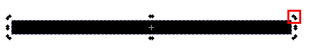

1.3. Erstellung der Sonne¶
Wir wollen nun die Sonne zeichnen und lernen dabei die Objekt-Hierarchie und nachfolgend die boolschen Operationen kennen.
So soll die Sonne final aussehen: (erstmal nur in Schwarz)

Fig. 1.34 Finale Version der Sonne¶
Um dies zu erreichen, erstellen wir Linien mit dem Bezierkurven Tool und Kreise mit/ohne Kontur mit dem Kreis Tool und legen die verschiedenen Objekte so übereinander, dass bestimmte Bereiche verdeckt sind und somit die Sonne entsteht.
Da der Trick mit weißen Konturen und Füllungen arbeitet wurde zur Erstellung ein grauer Hintergrund (ein großes graues Rechteck) verwendet um die Technik besser sichtbar zu machen

Fig. 1.35 Version mit weißem Hintergrund (rechts) und grauem Hintergrund (links) welche jedoch die Bereiche aufdeckt, die eigentlich nicht sichtbar sein sollten¶
Links die Übereinanderlagerung der Objekte, rechts das gleiche mit zusätzlich weißen Hintergrund
Wir erstellen also:
Linien (
L1) für die Sonnenstrahlenzwei Ringe (
R1undR2) die die Sonnenstrahlen innen und außen abgrenzenein Kreis (
K1) der die Sonne darstellt

Fig. 1.36 Schritte zur Erstellung der Sonne¶
Tipps zum Erstellen der Sonnenstrahlen
Durch Doppelklick auf das Objekt können diese gedreht werden
Wird das Objekt an dem äußeren Rand gedreht kann durch gleichzeitiges drücken von
STRin definierten Winkeln gedreht werden
{kind=link}
1.3.1. Objekthierarchie¶
Mit Objekthierarchie ist gemeint, in welcher Reihenfolge die Objekte übereinander liegen und sich dadurch teilweise überdecken.
In der Tools-Control-Bar finden sich folgende Buttons zur Veränderung der Objekthierarchie.

Ebenfalls zu finden unter Menu Bar → Objekt

Da ich diese Funktion sehr oft benutze, habe ich für Anheben und Absenken einen ShortCut auf meine Maus gelegt, das beschleunigt den Workflow enorm.
Hier wird gezeigt wie durch das Anheben und Absenken des Objektes sich die Sichtbarkeit verändert

Fig. 1.37 Veränderung der Objekthierarchie¶
Wollen Sie ein Objekt durch ein darauf liegendes hindurch selektieren, so halten Sie ALT gedrückt während der Auswahl

Fig. 1.38 Um unterliegendes Objekt zu selektieren muss man ALT gedrückt halten bei der Auswahl¶
Erstellen Sie nun mit Hilfe der gezeigten Methoden die Sonne und färben Sie diese am Ende gelb.
1.3.2. Linie bearbeiten mit Edit Path by Nodes Tool¶
ToDo:
Erstellen Sie nun mit dem Bezierkurven Tool ein Pfeil von der Sonne bis zur Grenzschicht
Wenn Sie nur den Start und Endpunkt der Linie bearbeiten wollen, empfiehlt es sich das Edit Path by Nodes Tool zu verwenden.

EDIT PATH BY NODES TOOL
(N) oder (Icon in der Toolbox (links))
Das Tool erlaubt auf die Knotenpunkte des Objektes zuzugreifen und diese zu verschieben.

Fig. 1.39 Veränderung der Start- bzw Endpunkte mit dem Edit Path by Nodes Tool¶
ToDo:
Blockieren Sie nun die Ebene “Sonne” und erzeugen Sie eine neue Ebene “Beschriftung”
Weiter geht es nun mit der Beschriftung …